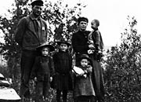

New transportation and communication links brought great change to settlements and communities. The Han people saw the site of their fish camp at the mouth of the Klondike River transformed into Dawson City. Whitehorse developed from a seasonal fish camp into a busy transfer point at the head of rail.
The sternwheelers travelled the waterways for more than 50 years linking the small settlements along the rivers and lakes. Many trading posts, communities and wood camps grew up along the sternwheeler routes and the winter roads.
The Yukon, once home only to small scattered groups of people, now also had larger, more settled, permanent communities with schools, roads and services. Until the 1940s, many First Nations people continued to live on the land away from settled areas.
As gold mining declined, Dawson shrank to a fraction of its former size; in 1923, the Mayo area, with its silver-lead production, overtook the Klondike as the main mineral region in the territory. Some settlements, at the mercy of mining fortunes, boomed for a short time and then declined into ghost towns.
Transportation continued to change and develop. With the end of the riverboat traffic, communities shifted again, away from the rivers that had once been the territory’s lifeblood to the new all-weather highways.
Roadhouses
In the early days, a roadhouse was a home away from home for people travelling on the Yukon’s roads. The roadhouses offered food and accommodation, plus shelter for horses, and were welcome stops in the cold winter months.
“Dutch Henry at Minto Bridge had served in clean and bountiful Dutch style with gentle reprimands of ‘Cut oudt der shenanigans’, if there was any disorderliness”.
Aaro Aho
YA, MS 82/161
Continue to Relationships and familyWhere we lived
(Above) Selkirk First Nation elder Jack Sam with his dog, 1987. People from Fort Selkirk moved to Pelly Crossing with the completion of the Klondike Highway.
YA, Selkirk First Nation collection #9656

Moosehide, just downriver from Dawson, shown here circa 1900, is a Han community.
YA, Storm collection, 94/76 #28
Whitehorse was established at the foot of the rapids, below Miles Canyon. The canyon was known to the Southern Tuchone people as Kwanlin. c.1905.
YA, Hamacher collection, 85/75 #25
Dawson, July 4, 1901. Dawson’s population was probably close to 40,000 at its peak.
YA, Johns collection, 82/318 #284
Carcross was one of the homes of the Carcross Tagish First Nation. In the first part of the 20th century it was known as Caribou Crossing.
YA, Preston collection, 85/78 #120
The Hendrickson family, homesteaders, c.1915.
YA, Swanson collection #8570

Joe Ladue’s fish camp, Pelly River area, 1942. First Nations people had seasonal camps where they would live while they harvested fish.
YA, Phelps collection #5732
The “Hay Ranch” roadhouse, n.d.
YA, Scott/Phelps collection, 89/31 #46